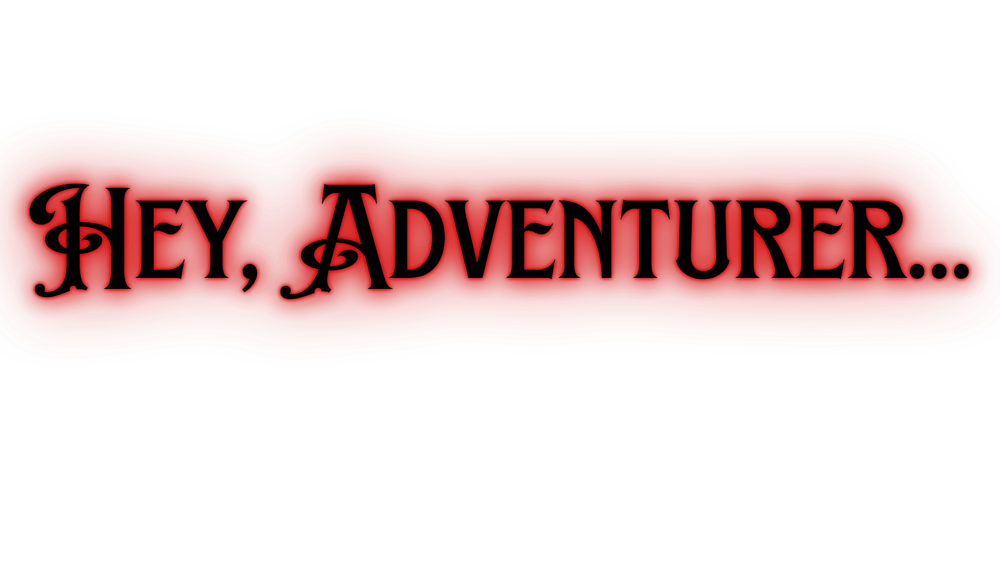
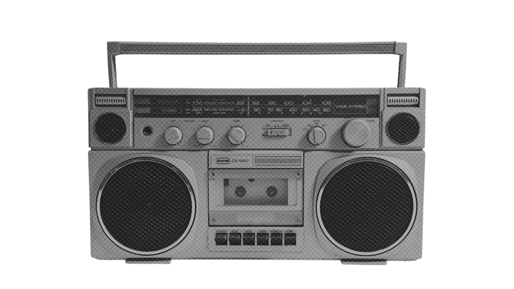

Are you up for an exploration like no other? Introducing...Stranger Than Friends, a Byler haven where all are welcome!
Our website plans to share with you the nature of a specific theoretical couple pairing (also known as "Byler"), derived from a TV show titled "Stranger Things", through music and all of its elements: melody, lyrics, tempo, and even just first-hand vibes!
Not only do we focus on music, but we also connect the melody to fiction, using those musical elements to bring audiences into a better and deeper comprehension of the story. Whether it be modern music that shares similar sentiments and heartfelt feelings of the characters, or songs that stay true to the show's timeline---hitting fans in their feels of nostalgia or immersion into the fictional universe, we are sure to handpick only the best of the best that will surely keep you hooked for more. We have been long time avid fans of the television show, as well as music geeks, which brought us to the notion to combine our interests into a project idea that would be bound to constantly fuel us with productivity and dedication in completing the project up until our last quarter.
Go here to enter your theories!
Go here to see other people's theories!!!